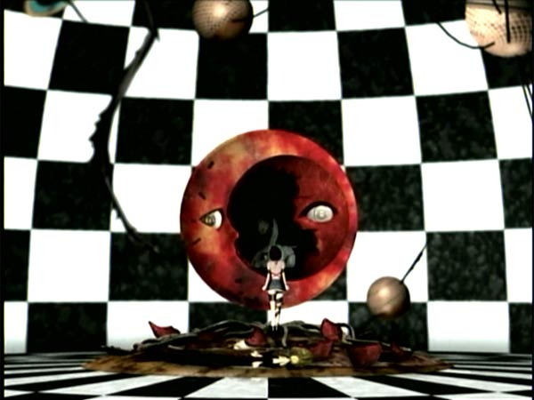
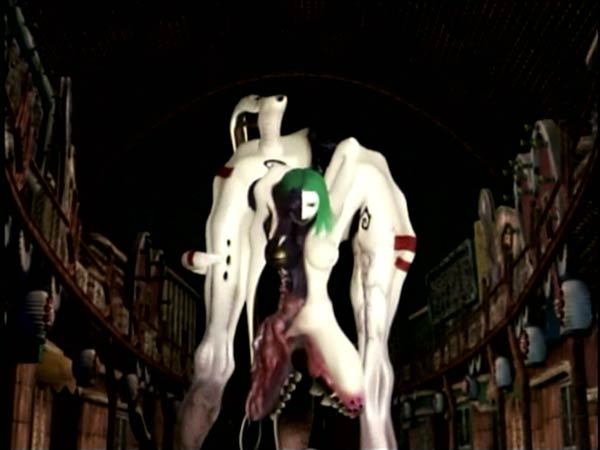
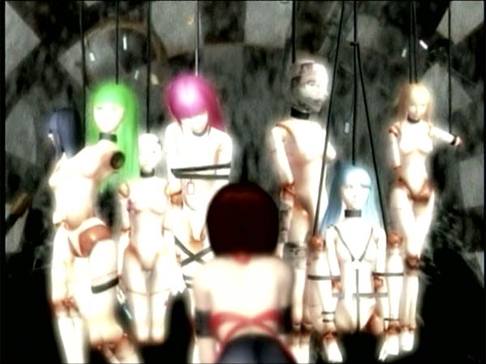
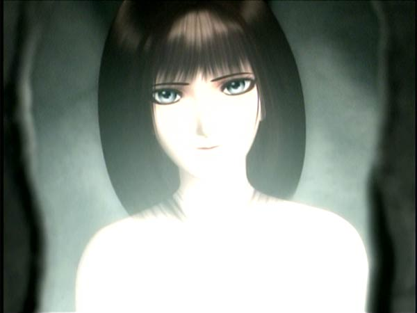
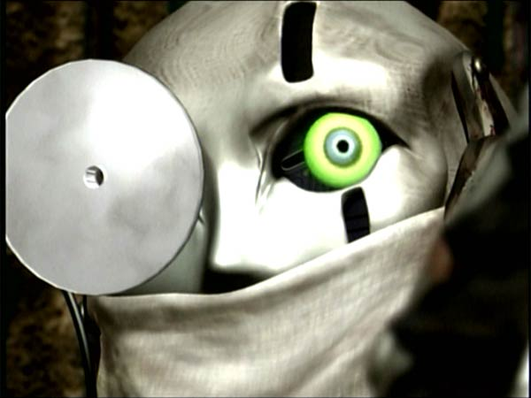

Movie review by : SFAM
Year : 2000
Directed by : Keitarou Motonaga
Written by : Chiaki Konaka
Degree of Cyberpunk visuals : High
Correlation to Cyberpunk themes : Medium
Rating : 7/10

Overview: If you haven't figured out by now that I have a soft spot for surrealist cyberpunk films, you will after this review. Malice doll is a terrific low-budget surrealist cyberpunk anime that takes place in an unspecified future, after all of mankind has been eradicated. This surrealist cyberpunk version of a pinocchio story focuses on a group of sex andriods called dolls (not unlike GITS2) living in their whore house who now simply drift through existence without any purpose. One Doll, Mallice, while exploring, encounters this strange tentacled beast who "rapes" her with about 40 tentacles (while one goes between her legs, the rest rip into her pretty much everywhere - this isn't meant as an erotic scene, at least I don't think so) and ends up transforming Mallice into a human. Malice then shares her "gift" by kissing all the other dolls and robots.

Malice@Doll is a very deep movie and traces some rather interesting notions. For instance, It challenges the notion that a doll made in man's image, if given the chance, would choose to become a living organism that looked human - maybe they would choose something completely and utterly different. Simultaneasly, this anime also asks if you would be how you really see yourself, what would you really look like?

Malice@Doll virtually disappeared almost as soon as it opened for a couple of reasons. First off, it came right on the heels of Final Fantasy, a blockbuster anime. While its wonderfully shot, the animation quality simply doesn't compare with the high budget 3D movies. Also, Malice@Doll is another one of those films that's simply too wierd for most people, and ends up being categorized as everything from Hentai on down. Truly, this anime is two scenes removed from being a PG anime, and certainly wouldn't qualify for anything past R. I happen to love it LOTS more than Final Fantasy though.
The DVD Extras: Another reason you want to buy this DVD is for its terrific extras. These include a college film class presentation on digital animation from Jonathan Clements - Co-Author of the Anime Encyclopedia. This is flat out terrific. In addition to tracing the change in Japan from cell animation to 3D animation (and the effects this had on the industry), Clements shows how Malice@Doll is one of those films that actually uses story elements to turn its technical weaknesses into strengths.

For instance, although their capalities for doing high quality stills are there, Motonaga didn't have the equipment to do fluid movement. He solved this with a "story" solution - he made the movie about android dolls, who are SUPPOSED to be jerky in their movements. For the "human" scenes, they used cell animation as highlights - this makes for a striking difference in the animation (See shot above).

The Bottom Line: Truly, aside from the surrealist story, the reason to watch this is for the visuals. A lot of the visuals in Malice@Doll almost remind you of a Salvador Dali painting. The diversity is such that I could have taken about 40 completely different screencaps here.